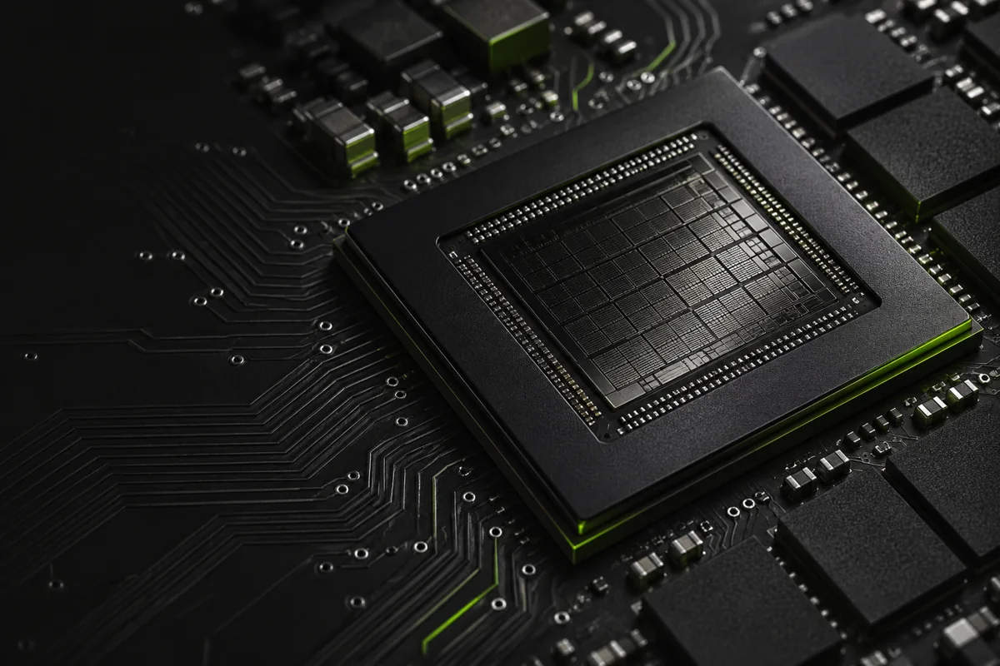

The scale changed
Annual revenue rose from $26.9B in FY2022 to $215.9B in FY2026. The latest quarter alone exceeds half of that FY2026 total.
See annual revenue ↗Explore how NVIDIA’s earnings, balance sheet and valuation changed as the business scaled, and how it compares with 30 technology peers.

Latest actuals · Q3 FY2027
NVIDIA reported $107.6 billion in data-center revenue, roughly 93% of consolidated sales. GAAP gross margin reached 74.8% and diluted EPS was $2.70.
Annual revenue rose from $26.9B in FY2022 to $215.9B in FY2026. The latest quarter alone exceeds half of that FY2026 total.
See annual revenue ↗GAAP net income rose from $31.9B to $65.3B year over year. Margins show how much of each sales dollar became profit.
Follow the margins ↗Assets rose from $206.8B at the January year-end to $372.2B in October. Receivables, inventories and investments help explain the increase.
Read credit analysis ↗Company filings
Switch between reported amounts, dollar changes and growth rates. The actual period end appears with each observation.
Growth rates use a positive comparison base. Margin movements are shown in percentage points.
Scroll sideways to see all companies.
No comparable values for this measure and period.
Select a period on the chart to update both cards and the table. Select a growth bar to jump to that company’s filing row. Growth uses each issuer’s reporting currency and requires a positive prior-period figure. Quarterly filing ends match within 45 days of NVIDIA’s. Annual filing ends match within 125 days.
| Company | Filing period end | Revenue (USD) | QoQ growth | YoY growth | Share of selected revenue |
|---|
Closing balances · USD billions
Gross, operating and net · % of revenue
Scroll sideways to compare changes
| Line item | Actual | QoQ change | QoQ growth | YoY change | YoY growth |
|---|
NVIDIA and 30 peers
Select a period on a trend chart to update its table. Choose a company’s bar to find its row.
Amounts are in USD billions. Trends group filings by calendar period. Tables show each issuer’s actual period end.
December 2016 – November 2026
Explore month-end price, distributions and valuation. Choose a Bank of Singapore metric to see dated consensus forward quotes.
Price moves compare the last close before each event with the first trading close on or after its 1- or 3-month anniversary. Prices are split-adjusted USD per share and exclude dividends. Daily price source ↗
Markers show event months. Cards show exact dates and sources. Other news can also affect these moves. Video reference ↗
Monthly closes use the last available trading day. November 2026 is partial. Dividends are grouped by ex-date.
Select an event to open it on the chart. Select a change column to sort gains first, then losses.
Scroll sideways for all four change columns
| Event |
|---|
Changes use the last close before the event and the first trading close on or after the calendar anniversary. Prices are split-adjusted USD per share and exclude dividends. Daily price source ↗
30 comparison companies
Compare NVIDIA with chip designers, manufacturers, cloud platforms and infrastructure suppliers. Each company retains its own fiscal period end.
Scroll sideways for more metrics
| Company | Filing end | Revenue USD bn | Net income USD bn | Assets USD bn | Liabilities USD bn | Gross margin | Revenue YoY | Market cap USD bn | P/E TTM | P/B | Yield TTM |
|---|
The NVIDIA row stays at the top. Monetary totals use reported figures and the applicable period FX. Select a filing date to view its source where available. A dash marks an unavailable value. An asterisk marks liabilities calculated as assets less total equity for a verified filing.
100 at the first shared month · local-currency prices
Indexed prices exclude dividends and the effect of currency conversion.
Issuer credit
Cash generation remains strong. The June debt issuance, larger investment portfolio and higher working capital change how much cash the business has committed.
Cash plus marketable debt securities totaled $53.51B, or $21.14B above reported debt. The equity holdings introduce market-price exposure. October quarter release ↗
New notes only · $25.0B principal
October-quarter operating cash flow was $48.25B. Capex of $4.42B leaves $43.83B on the dashboard’s operating cash flow less capex measure.
Quarterly repurchases and dividends totaled $28.15B. Receivables and inventory were both materially higher than at the January year-end.
Two direct customers accounted for 36% of FY2026 sales. Export controls, customer capex and the investment portfolio can affect cash flow and liquidity.
FY2026 10-K risk factors ↗Data & methodology
Use the actual period end and publication date when comparing results. NVIDIA’s fiscal quarters can end in a different month from those of its peers.
SEC filings and local equivalents. Some standalone quarters are derived from year-to-date statements. The October quarter uses the 17 November earnings exhibit.
NVIDIA SEC filings ↗Exchange closes, cash distributions, filed share counts, FX and dated BOS snapshots. Trailing P/E requires positive earnings.
Stocks BETA 2 ↗USD comparison uses period-average FX for financial-statement flows and period-end FX for balance-sheet figures.
Stocks BETA 3 ↗Historical peer comparison
Read a filing line across all 31 companies, then open the original research views for revenue mix, debt maturities and guidance.
Scroll sideways to compare more companies
NVIDIA appears first. Statement amounts show each issuer’s currency in millions. USD comparison rows use millions of US dollars. A dagger marks a verified liabilities balance derived from assets less equity. Scroll across for more companies, or choose a smaller group. A dash means the archive has no value.
Nearest calendar quarter-end · actual fiscal ends in the chart readout
NVIDIA’s interactive price and valuation charts, earnings, guidance, research cards and credit coverage.
Open Stocks BETA 2 in a new tab ↗Explore the original filing diagrams, geographic sales, maturity ladders and fundamentals checklist for issuers covered by BETA 3.
Share-price simulation
Move NVIDIA’s price and see which valuation multiples cross the peer median. Earnings, cash flow, book value, dividends and peer quotes stay fixed.
Enter a positive share price of at least $0.01.
Green highlights mark a lower multiple or a higher yield than the selected peer median. Each median excludes NVIDIA. Counts show how many eligible peers NVIDIA beats at the selected price. The parity price is the NVDA share price that would match the peer median.
Scroll sideways to see all companies.
No comparable values for this metric in the selected group.
| Company | Ratio | Quote date | Compared with NVIDIA |
|---|
Market cap scales with price at the archived share count. Trailing P/E and P/B scale from the market close. Forward multiples and forward dividend yield use the BOS quote as their starting price. Earnings yield is 100 divided by trailing P/E. Cash and forward dividend yields move inversely with price.
Price/sales and cash-flow multiples use four consecutive standalone quarters disclosed by each issuer’s closing quote. Free cash flow is operating cash flow less capital expenditure. ¹ Enterprise value is estimated market cap plus reported interest-bearing debt less cash and equivalents. EBITDA is the archive’s operating income plus depreciation and amortization proxy.
Multiples require positive denominators. Loss-making peers have no trailing P/E ranking. Zero dividend yields count, and free cash flow yields can be negative. Industry mix, expected growth and capital needs can explain different multiples.